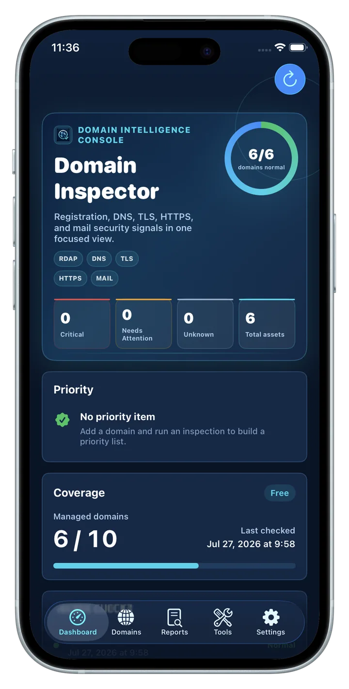

域名情报
查看注册信息、到期状态、剩余天数，以及每个域名的关注信号。
域名健康检查工具
将注册信息、DNS 记录、HTTPS 可达性、TLS 证书和邮件安全检查集中到一个隐私优先的应用中，适合个人站点、API、家庭服务器和小团队资产管理。

功能
Domain Health Inspector 将域名监控、DNS 检查、HTTPS 健康检查、TLS 证书监控和邮件安全分析组织成清晰的运维类别。
查看注册信息、到期状态、剩余天数，以及每个域名的关注信号。
A、AAAA、CNAME、NS、MX、TXT 和 DMARC 等记录按类型分组，配置更容易阅读。
验证 HTTPS 响应、TLS 握手和证书详情，也支持 443 端口之外的服务。
使用 JSON 做完整备份、迁移和恢复，需要可读副本时可以导出 PDF 报告。
隐私
你的域名资产清单和报告保存在本地应用数据中。不需要云账号，备份文件只会在你主动导出时生成。
流程
添加域名或 URL，运行检查，然后按注册信息、DNS、HTTP、TLS 和邮件类别查看结果。
直接粘贴域名、URL 或明确的服务端口。
检查所选资产的注册信息、DNS、HTTPS、TLS 和邮件安全信号。
按注册信息、DNS、HTTP、TLS 和邮件分类阅读结果。
使用 JSON 保存完整数据，并导出易读的 PDF 报告。
OPSHOME 基础设施工具集
需要更广的基础设施可见性？通过 OpsHome NOC 查看公网服务、私有基础设施、Docker、Proxmox 和网络监控。